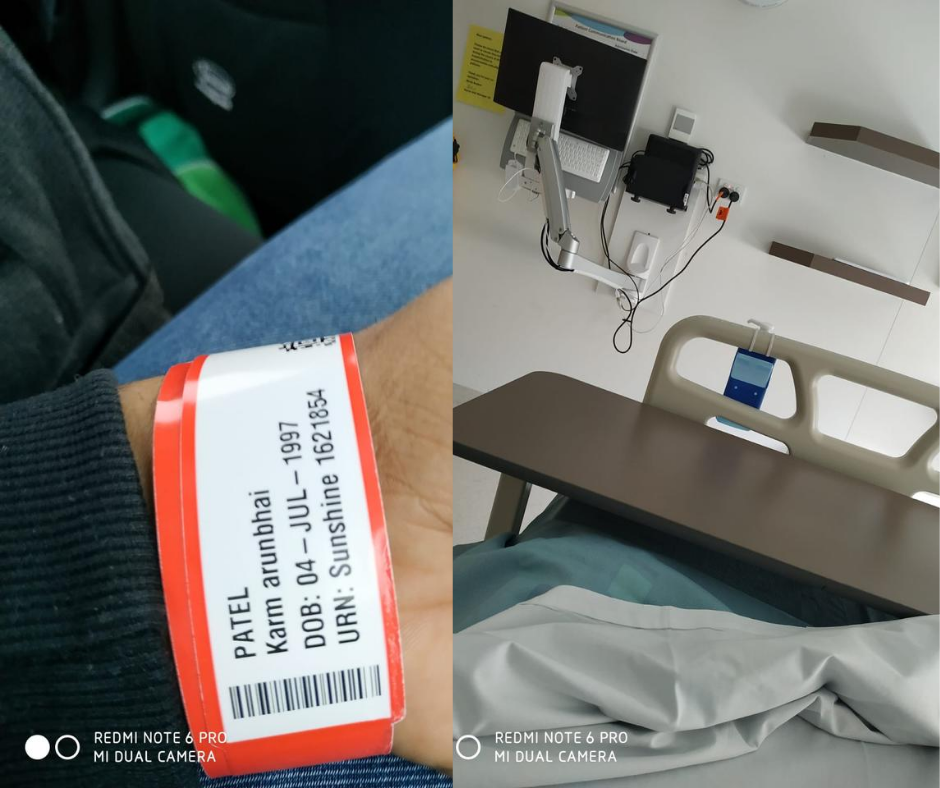

So I had a flight on 7th of Dec 2018 from Ahmedabad to Melbourne with a halt at Delhi. It was my first experience in a flight and as we were all set in a Delhi to Melbourne flight, I knew it is going to be a long trip and I had already booked a window sit in advance. As we settled in plane, Out of curiosity I have started to check out all the features which were there, and made sure I know everything like someone is going to ask me about it in the exam or so. Having pressed all the buttons near my sit I felt deep sense of satisfaction.
As I was getting back to normal and seeing through the window, one of the air hostesses came and asked me, sir, do you need anything? I was like, no I am fine. She said, you pressed that button which means you need attention. And finally I got to know what that button is used for, with a feeling of absolute embarrassment I made up a story and said TV is not working. Can you please fix it? Just to save me from further embarrassment she said that she will check it in the system and will let me know. And after that I have not pressed any button without knowing its function.
First impression of Australia
Finally, I have arrived in Australia on Saturday morning. My brother in law came to pick me up and on our way back, the first thought that come to my mind is how peaceful Australia is. Everyone is driving in their lanes, and following traffic rules strictly. Contrary to India, you will only to get to hear someone blowing their horn when you make a mistake or if you break any traffic rules. Except that India’s library and Australia’s busiest road has same serenity
I got hospitalised
After spending first few days recovering from Jet lag, I have started to get back in rhythm. On Monday I have opened my bank account and did necessary documentation. Everything just started to get normal before I started feeling sick and felt some problems in my stomach, later on I have started throwing up whatever I ate. We went to the general practitioner (MBBS in India) and he told me to get admitted to hospital as soon as possible.
My sister took me to the hospital and there I got to know that I am diagnosed with hepatitis B. Bang, I was totally in shock. Even after paying for emergency services we have waited for 3 hours outside, finally nurses came and took me in one room and later told me that I must stay one night in the hospital as doctors were supposed to come tomorrow morning. I was in total shock, not by the fact that I have to stay in the hospital alone but by the cost of staying one night, I was allocated single room which cost around $2100/night. Interesting thing is staying in hospital in Australia is totally different to India, Here no one has time to come and sit with you for the whole day or give you support. You must stay alone all the time.
Within a week of my arrival, I knew it is going be one tough ride. Little did I knew that I was feeling better until next day doctor came to visit me and said that my blood reports are showing improvement but I have to still stay in hospital until I get fully recovered and which might take few days, weeks or months. Next day they took me to special care and I have stayed in the hospital for couple of days.
Hiding emotions and Catching up
I have not told my family back in India anything about my situation. Instead of video calling, I used to make normal calls to hide my condition. Otherwise, they would start crying. Just to make them feel better I would make up any story of how my day has been and not knowing my actual condition they would accept whatever I say to them. I literally used to hold my tears while talking to my parents. I was unable to understand what is happening with me and it got to the point where I slept 3 days with my shoes on.
On my third day I went to the reception and said to the doctor that I am not going to stay here any longer as I have no financial backup to pay the hospital charges. Doctors forced me to stay but I stayed adamant and left hospital after signing on the form which said that if anything happens to me after leaving hospital I will be solely responsible for the consequences. Finally after running away from hospital I came back to my sisters place, and as I was advised to eat only fruits and veggies for next one and half month, I lost 7 kg in that duration. Luckily I have my sister to take care of everything. Or else it would have been worse. After getting back on my feet, I have started to look for work, searched online and used few references. Only hurdle was my sister was living in Melbourne and my university was in Geelong which was around 60KM away.
First Job Experience
As I had planned to move to Geelong once my study starts, I have been searching for job in Geelong only. After few attempts, I got a job reference from my brother in law. It was a hand car wash. Yes, you have to wash cars and you will be paid $15 per hour. It was not used to be busy at times, here’s how my schedule looks like. I used to wake up at 6 o’clock and would take a bus from my home to reach railway station. From there I would take a train which will drop me in Geelong. After reaching there I would take another bus to reach work place. It would we exactly same for returning home. Job starts at 9am and If you it’s not busy, you have to go home by 1pm. Which means to do 4 hour work you will have to travel 4 hours.
I would leave my home at 7 in the morning and probably come back at around 3pm in the afternoon after finishing my job. Just to add something for people who have not done car washing, let me tell you it Is one of the toughest job and involves lots of physical pain. And it is by far the hardest job I have done since moving to Australia. I have known people who have done it for more than a year and are still doing it. They are just different breed, I tip my hat to them. In my case, I have did this for around 2-3 months and then left it as soon as I moved to Geelong.
Thank you so much for your time, if you have made it through here please make sure to share this experience with your dear and dear ones. In the next blog I will try to give you the closer picture work-study-life balance.